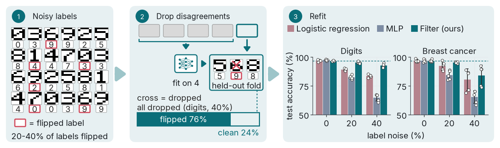
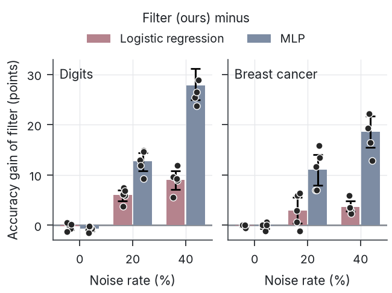
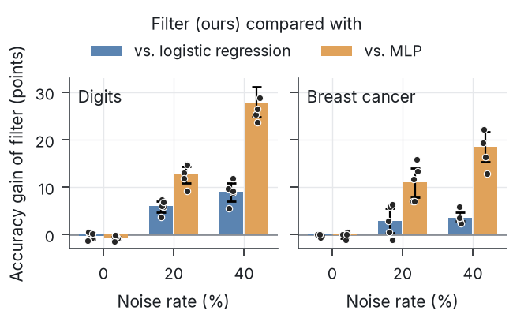

A Linear Model's Out-of-Fold Disagreements Find the Flipped Labels: Filtering Label Noise Without a Clean Set or a Noise Rate
Storyline
Symmetric label noise costs a logistic regression many accuracy points, and an untuned MLP trained on the same labels loses far more; the usual fixes need a clean validation set, a noise-rate estimate or deep-network training dynamics. We measure the simplest alternative: predict every training sample with a logistic regression fit on the other folds, drop the samples whose out-of-fold prediction disagrees with their given label, and refit on the rest. It works because a sample that models fit without it cannot explain is more likely flipped than one they explain, and the measurement confirms this: in every noisy setting most dropped samples are truly mislabeled and most flipped labels are dropped. The refit model beats plain logistic regression in all but one paired noisy run and the untuned MLP in every one, recovering most of the lost accuracy in three of four noisy settings, while on clean labels it costs a fraction of a point and the MLP ties or wins. Before reaching for a bigger model or a noise-rate estimate, a linear model's own out-of-fold errors already clean most symmetric noise on small problems; we make no claim beyond two small datasets and symmetric flips.
Open problems
- consistency: notation: table_main.tex: 'symmetric label noise' appears 1 time(s); the paper's name is 'symmetric noise' (fix it in .scriptorium/tables/main.json and rerun `scriptorium table main`)
Stages
| stage | after | status | sessions | output tokens | minutes | history | notes |
|---|---|---|---|---|---|---|---|
| scout | done | 1 | 5,192 | 0.6 | f4fb27e | ||
| experiments | scout | done | 1 | 4,003 | 0.4 | d7457a0 | |
| evidence | scout | done | 1 | 22,495 | 2.0 | 32c49b6 | |
| stats | evidence | done | 1 | 16,130 | 1.4 | acfb3bc | |
| venueread | scout | done | 10 | 49,730 | 1.3 | 8d588b4 | 1 fix round(s) |
| venuestyle | venueread | done | 2 | 11,090 | 1.4 | 786f854 | 1 fix round(s) |
| search | scout | done | 1 | 5,807 | 5.8 | 3730276 | |
| read | search | done | 5 | 17,515 | 1.0 | f4e351c | 1 fix round(s) |
| ledger | stats, experiments | done | 1 | 9,334 | 0.9 | 0eb186a | |
| story | ledger, read, venuestyle | done | 4 | 20,103 | 1.8 | e9f8b89 | |
| outline | story | done | 1 | 42,853 | 5.7 | b41a7ca | |
| notation | outline | done | 1 | 6,874 | 0.7 | f0ea751 | |
| library | outline, read | done | 1 | 3,144 | 2.0 | 11b386b | |
| figplan | outline | done | 1 | 6,186 | 0.6 | 821f3b6 | |
| figures | figplan | done | 2 | 23,495 | 2.0 | 802db51 | |
| critique | figures | done | 7 | 38,102 | 3.7 | 038cb8b | 3 fix round(s) |
| tables | outline | done | 2 | 12,175 | 1.1 | 00e2454 | |
| draft | notation, library, critique, tables | done | 3 | 12,183 | 0.8 | 6db086a | |
| frame | draft | done | 8 | 19,980 | 1.2 | 48e147d | |
| edit | frame | done | 2 | 6,329 | 1.5 | 35d4353 | 1 fix round(s) |
| audit | edit | done | 1 | 18,075 | 1.6 | 89b4a34 | |
| citecheck | edit | done | 1 | 6,083 | 0.6 | 0f6bd3d | |
| polish | audit, citecheck | done | 9 | 20,448 | 0.9 | 9d7d22e | 1 fix round(s) |
| fit | polish | done | 2 | 4,524 | 0.6 | e9fde7c | |
| review0 | fit | done | 6 | 29,443 | 1.1 | f3fef37 | mean review 4.25; 1 fix round(s) |
| chair0 | review0 | done | 1 | 11,401 | 1.2 | 4b86064 | |
| revise1 | chair0 | done | 2 | 28,589 | 3.3 | 02fdeb1 | 1 fix round(s); kept: mean score 4.25 -> 4.25 |
| review1 | revise1 | done | 4 | 20,959 | 0.7 | 74a1245 | mean review 4.25 |
| comply | review1 | done | 0 | 0 | 0.0 | 3eaa0dd | |
| proofread | comply | done | 7 | 19,355 | 0.4 | db843ac | |
| inspect | proofread | done | 11 | 71,479 | 5.1 | 801d0d4 | 3 fix round(s) |
| final | inspect | done | 0 | 0 | 0.1 | c0af465 | |
| package | final | pending | 0 | 0 | |
Numbers
Every number printed in the paper is tagged with a recipe in paper/sources.py and recomputed from the repository's data before the paper is accepted.
| key | value | what it is | files read | printed at |
|---|---|---|---|---|
acc_filter_breast_cancer_n0 | 96.6082 | test accuracy (%) of filter on breast_cancer at 0% label noise, mean over seeds 0-4 | results/runs.jsonl | table_main.tex:13 |
acc_filter_breast_cancer_n20 | 95.2047 | test accuracy (%) of filter on breast_cancer at 20% label noise, mean over seeds 0-4 | results/runs.jsonl | table_main.tex:13 |
acc_filter_breast_cancer_n40 | 83.9766 | test accuracy (%) of filter on breast_cancer at 40% label noise, mean over seeds 0-4 | results/runs.jsonl | table_main.tex:13 |
acc_filter_digits_n0 | 96.5926 | test accuracy (%) of filter on digits at 0% label noise, mean over seeds 0-4 | results/runs.jsonl | table_main.tex:13 |
acc_filter_digits_n20 | 95.1111 | test accuracy (%) of filter on digits at 20% label noise, mean over seeds 0-4 | results/runs.jsonl | table_main.tex:13 |
acc_filter_digits_n40 | 92.6296 | test accuracy (%) of filter on digits at 40% label noise, mean over seeds 0-4 | results/runs.jsonl | table_main.tex:13 |
acc_logreg_breast_cancer_n0 | 96.7251 | test accuracy (%) of logreg on breast_cancer at 0% label noise, mean over seeds 0-4 | results/runs.jsonl | table_main.tex:11 |
acc_logreg_breast_cancer_n20 | 92.2807 | test accuracy (%) of logreg on breast_cancer at 20% label noise, mean over seeds 0-4 | results/runs.jsonl | table_main.tex:11 |
acc_logreg_breast_cancer_n40 | 80.3509 | test accuracy (%) of logreg on breast_cancer at 40% label noise, mean over seeds 0-4 | results/runs.jsonl | table_main.tex:11 |
acc_logreg_digits_n0 | 96.8148 | test accuracy (%) of logreg on digits at 0% label noise, mean over seeds 0-4 | results/runs.jsonl | table_main.tex:11 |
acc_logreg_digits_n20 | 89.1111 | test accuracy (%) of logreg on digits at 20% label noise, mean over seeds 0-4 | results/runs.jsonl | table_main.tex:11 |
acc_logreg_digits_n40 | 83.5926 | test accuracy (%) of logreg on digits at 40% label noise, mean over seeds 0-4 | results/runs.jsonl | table_main.tex:11 |
acc_mlp_breast_cancer_n0 | 96.7251 | test accuracy (%) of mlp on breast_cancer at 0% label noise, mean over seeds 0-4 | results/runs.jsonl | table_main.tex:12 |
acc_mlp_breast_cancer_n20 | 84.2105 | test accuracy (%) of mlp on breast_cancer at 20% label noise, mean over seeds 0-4 | results/runs.jsonl | table_main.tex:12 |
acc_mlp_breast_cancer_n40 | 65.3801 | test accuracy (%) of mlp on breast_cancer at 40% label noise, mean over seeds 0-4 | results/runs.jsonl | table_main.tex:12 |
acc_mlp_digits_n0 | 97.3333 | test accuracy (%) of mlp on digits at 0% label noise, mean over seeds 0-4 | results/runs.jsonl | table_main.tex:12 |
acc_mlp_digits_n20 | 82.4074 | test accuracy (%) of mlp on digits at 20% label noise, mean over seeds 0-4 | results/runs.jsonl | table_main.tex:12 |
acc_mlp_digits_n40 | 64.8889 | test accuracy (%) of mlp on digits at 40% label noise, mean over seeds 0-4 | results/runs.jsonl | table_main.tex:12 |
diff_filter_logreg_digits_n40 | 9.03704 | mean paired test-accuracy difference (points), filter minus logreg, digits, 40% noise, seeds 0-4 | results/runs.jsonl | 05_results.tex:22 |
diff_filter_mlp_digits_n40 | 27.7407 | mean paired test-accuracy difference (points), filter minus mlp, digits, 40% noise, seeds 0-4 | results/runs.jsonl | 05_results.tex:28 |
dropped_breast_cancer_n20 | 92.8 | mean number of training samples the filter drops on breast_cancer at 20% noise, seeds 0-4 | results/runs.jsonl | table_drops.tex:12 |
dropped_breast_cancer_n40 | 177.2 | mean number of training samples the filter drops on breast_cancer at 40% noise, seeds 0-4 | results/runs.jsonl | table_drops.tex:13 |
dropped_digits_n20 | 377.4 | mean number of training samples the filter drops on digits at 20% noise, seeds 0-4 | results/runs.jsonl | table_drops.tex:10 |
dropped_digits_n40 | 634.2 | mean number of training samples the filter drops on digits at 40% noise, seeds 0-4 | results/runs.jsonl | table_drops.tex:11 |
dropped_pct_digits_n0 | 3.46858 | mean percent of the 1257 digits training samples dropped by the filter at 0% noise, seeds 0-4 | results/runs.jsonl | 05_results.tex:32 |
filter_folds | 5 | number of cross-validation folds used by the filter, from the config | experiments/config.json | 03_method.tex:10, 04_setup.tex:10 |
logreg_C | 1 | inverse regularization strength C of logistic regression, from the config | experiments/config.json | 04_setup.tex:8 |
mlp_hidden | 64 | hidden units of the MLP (one hidden layer), from the config | experiments/config.json | 04_setup.tex:9 |
mlp_max_iter | 500 | maximum training iterations of the MLP, from the config | experiments/config.json | 04_setup.tex:9 |
n_seeds | 5 | number of seeds in the config | experiments/config.json | 04_setup.tex:14, 04_setup.tex:15, 05_results.tex:10, table_drops.tex:4, table_main.tex:4 |
n_test_breast_cancer | 171 | number of test samples in breast_cancer (30% split) | results/runs.jsonl | table_main.tex:4 |
n_test_digits | 540 | number of test samples in digits (30% split) | results/runs.jsonl | table_main.tex:4 |
n_train_breast_cancer | 398 | number of training samples in breast_cancer (70% split) | results/runs.jsonl | 04_setup.tex:5 |
n_train_digits | 1257 | number of training samples in digits (70% split) | results/runs.jsonl | 04_setup.tex:5 |
noise_high_pct | 40 | highest label-noise rate (%) from the config | experiments/config.json | 04_setup.tex:5, abstract.tex:1 |
noise_low_pct | 20 | lower non-zero label-noise rate (%) from the config | experiments/config.json | 04_setup.tex:5, abstract.tex:1 |
noisy_pct_digits_n40 | 39.3636 | mean realized percent of digits training labels flipped at nominal 40% noise, seeds 0-4 | results/runs.jsonl | 01_intro.tex:14 |
one_sample_pts_breast_cancer | 0.584795 | accuracy points that one test sample is worth on breast_cancer: 100 / n_test | results/runs.jsonl | 05_results.tex:32 |
p_bc20_filter_vs_lr | 0.117176 | p-value, two-sided paired t-test over 5 seeds, filter vs logreg test accuracy, breast_cancer, 20% noise | results/runs.jsonl | 05_results.tex:24 |
p_prec_bc20_gt50 | 6.52046e-05 | p-value, two-sided one-sample t-test (paired against constant 50) over 5 seeds, filter precision (%), breast_cancer, 20% noise | results/runs.jsonl | table_drops.tex:12 |
p_prec_bc40_gt50 | 0.000545144 | p-value, two-sided one-sample t-test (paired against constant 50) over 5 seeds, filter precision (%), breast_cancer, 40% noise | results/runs.jsonl | table_drops.tex:13 |
p_prec_dg20_gt50 | 0.000151772 | p-value, two-sided one-sample t-test (paired against constant 50) over 5 seeds, filter precision (%), digits, 20% noise | results/runs.jsonl | table_drops.tex:10 |
p_prec_dg40_gt50 | 2.1437e-07 | p-value, two-sided one-sample t-test (paired against constant 50) over 5 seeds, filter precision (%), digits, 40% noise | results/runs.jsonl | table_drops.tex:11 |
p_trend_dg_gain_lr | 0.00247732 | p-value, two-sided paired t-test over 5 seeds, per-seed filter-minus-logreg gain at 40% vs 20% noise, digits | results/runs.jsonl | 05_results.tex:22 |
precision_breast_cancer_n20 | 76.353 | mean over seeds 0-4 of filter precision (%), dropped samples truly flipped, breast_cancer, 20% noise | results/runs.jsonl | table_drops.tex:12 |
precision_breast_cancer_n40 | 68.2508 | mean over seeds 0-4 of filter precision (%), dropped samples truly flipped, breast_cancer, 40% noise | results/runs.jsonl | table_drops.tex:13 |
precision_digits_n20 | 64.6139 | mean over seeds 0-4 of filter precision (%), dropped samples truly flipped, digits, 20% noise | results/runs.jsonl | table_drops.tex:10 |
precision_digits_n40 | 76.1051 | mean over seeds 0-4 of filter precision (%), dropped samples truly flipped, digits, 40% noise | results/runs.jsonl | table_drops.tex:11 |
recall_breast_cancer_n20 | 92.5165 | mean over seeds 0-4 of filter recall (%), flipped samples dropped, breast_cancer, 20% noise | results/runs.jsonl | table_drops.tex:12 |
recall_breast_cancer_n40 | 78.9076 | mean over seeds 0-4 of filter recall (%), flipped samples dropped, breast_cancer, 40% noise | results/runs.jsonl | table_drops.tex:13 |
recall_digits_n20 | 98.4639 | mean over seeds 0-4 of filter recall (%), flipped samples dropped, digits, 20% noise | results/runs.jsonl | table_drops.tex:10 |
recall_digits_n40 | 97.5422 | mean over seeds 0-4 of filter recall (%), flipped samples dropped, digits, 40% noise | results/runs.jsonl | table_drops.tex:11 |
recovered_breast_cancer_n20 | 65.7895 | percent of logreg's accuracy loss at 20% noise on breast_cancer regained by filter: (filter - logreg)/(logreg at 0% - logreg), means over seeds 0-4 | results/runs.jsonl | table_drops.tex:12 |
recovered_breast_cancer_n40 | 22.1429 | percent of logreg's accuracy loss at 40% noise on breast_cancer regained by filter: (filter - logreg)/(logreg at 0% - logreg), means over seeds 0-4 | results/runs.jsonl | 05_results.tex:24, table_drops.tex:13 |
recovered_digits_n20 | 77.8846 | percent of logreg's accuracy loss at 20% noise on digits regained by filter: (filter - logreg)/(logreg at 0% - logreg), means over seeds 0-4 | results/runs.jsonl | table_drops.tex:10 |
recovered_digits_n40 | 68.3473 | percent of logreg's accuracy loss at 40% noise on digits regained by filter: (filter - logreg)/(logreg at 0% - logreg), means over seeds 0-4 | results/runs.jsonl | table_drops.tex:11 |
sd_filter_breast_cancer_n0 | 0.960917 | sample sd (points) over seeds 0-4 of test accuracy, filter, breast_cancer, 0% noise | results/runs.jsonl | table_main.tex:13 |
sd_filter_breast_cancer_n20 | 0.76248 | sample sd (points) over seeds 0-4 of test accuracy, filter, breast_cancer, 20% noise | results/runs.jsonl | table_main.tex:13 |
sd_filter_breast_cancer_n40 | 8.95138 | sample sd (points) over seeds 0-4 of test accuracy, filter, breast_cancer, 40% noise | results/runs.jsonl | 05_results.tex:24, table_main.tex:13 |
sd_filter_digits_n0 | 0.360992 | sample sd (points) over seeds 0-4 of test accuracy, filter, digits, 0% noise | results/runs.jsonl | table_main.tex:13 |
sd_filter_digits_n20 | 0.874498 | sample sd (points) over seeds 0-4 of test accuracy, filter, digits, 20% noise | results/runs.jsonl | table_main.tex:13 |
sd_filter_digits_n40 | 1.59517 | sample sd (points) over seeds 0-4 of test accuracy, filter, digits, 40% noise | results/runs.jsonl | table_main.tex:13 |
sd_logreg_breast_cancer_n0 | 1.21266 | sample sd (points) over seeds 0-4 of test accuracy, logreg, breast_cancer, 0% noise | results/runs.jsonl | table_main.tex:11 |
sd_logreg_breast_cancer_n20 | 3.73079 | sample sd (points) over seeds 0-4 of test accuracy, logreg, breast_cancer, 20% noise | results/runs.jsonl | table_main.tex:11 |
sd_logreg_breast_cancer_n40 | 9.38956 | sample sd (points) over seeds 0-4 of test accuracy, logreg, breast_cancer, 40% noise | results/runs.jsonl | table_main.tex:11 |
sd_logreg_digits_n0 | 0.821939 | sample sd (points) over seeds 0-4 of test accuracy, logreg, digits, 0% noise | results/runs.jsonl | table_main.tex:11 |
sd_logreg_digits_n20 | 0.974644 | sample sd (points) over seeds 0-4 of test accuracy, logreg, digits, 20% noise | results/runs.jsonl | table_main.tex:11 |
sd_logreg_digits_n40 | 1.25325 | sample sd (points) over seeds 0-4 of test accuracy, logreg, digits, 40% noise | results/runs.jsonl | table_main.tex:11 |
sd_mlp_breast_cancer_n0 | 1.21266 | sample sd (points) over seeds 0-4 of test accuracy, mlp, breast_cancer, 0% noise | results/runs.jsonl | table_main.tex:12 |
sd_mlp_breast_cancer_n20 | 3.98777 | sample sd (points) over seeds 0-4 of test accuracy, mlp, breast_cancer, 20% noise | results/runs.jsonl | table_main.tex:12 |
sd_mlp_breast_cancer_n40 | 5.42947 | sample sd (points) over seeds 0-4 of test accuracy, mlp, breast_cancer, 40% noise | results/runs.jsonl | table_main.tex:12 |
sd_mlp_digits_n0 | 0.549348 | sample sd (points) over seeds 0-4 of test accuracy, mlp, digits, 0% noise | results/runs.jsonl | table_main.tex:12 |
sd_mlp_digits_n20 | 1.63551 | sample sd (points) over seeds 0-4 of test accuracy, mlp, digits, 20% noise | results/runs.jsonl | table_main.tex:12 |
sd_mlp_digits_n40 | 3.11695 | sample sd (points) over seeds 0-4 of test accuracy, mlp, digits, 40% noise | results/runs.jsonl | table_main.tex:12 |
test_fraction_pct | 30 | test split fraction (%) from the config | experiments/config.json | 04_setup.tex:13 |
time_filter_over_logreg_digits_n0 | 5.02385 | ratio of mean fit_seconds, filter over logreg, digits, 0% noise, seeds 0-4 (indicative; machine unknown) | results/runs.jsonl | 05_results.tex:32 |
bc0_lr_diff_ci_high | 0 | upper end of 95% CI (points) of paired filter minus logreg accuracy difference, 5 seeds, breast_cancer, 0% noise | results/runs.jsonl | not printed |
bc0_lr_diff_ci_low | -0.350877 | lower end of 95% CI (points) of paired filter minus logreg accuracy difference, 5 seeds, breast_cancer, 0% noise | results/runs.jsonl | not printed |
bc0_mlp_diff_ci_high | 0.350877 | upper end of 95% CI (points) of paired filter minus mlp accuracy difference, 5 seeds, breast_cancer, 0% noise | results/runs.jsonl | not printed |
bc0_mlp_diff_ci_low | -0.701754 | lower end of 95% CI (points) of paired filter minus mlp accuracy difference, 5 seeds, breast_cancer, 0% noise | results/runs.jsonl | not printed |
bc20_lr_diff_ci_high | 5.49708 | upper end of 95% CI (points) of paired filter minus logreg accuracy difference, 5 seeds, breast_cancer, 20% noise | results/runs.jsonl | not printed |
bc20_lr_diff_ci_low | 0.350877 | lower end of 95% CI (points) of paired filter minus logreg accuracy difference, 5 seeds, breast_cancer, 20% noise | results/runs.jsonl | not printed |
bc20_mlp_diff_ci_high | 14.0351 | upper end of 95% CI (points) of paired filter minus mlp accuracy difference, 5 seeds, breast_cancer, 20% noise | results/runs.jsonl | not printed |
bc20_mlp_diff_ci_low | 7.95322 | lower end of 95% CI (points) of paired filter minus mlp accuracy difference, 5 seeds, breast_cancer, 20% noise | results/runs.jsonl | not printed |
bc40_lr_diff_ci_high | 4.79532 | upper end of 95% CI (points) of paired filter minus logreg accuracy difference, 5 seeds, breast_cancer, 40% noise | results/runs.jsonl | not printed |
bc40_lr_diff_ci_low | 2.80702 | lower end of 95% CI (points) of paired filter minus logreg accuracy difference, 5 seeds, breast_cancer, 40% noise | results/runs.jsonl | not printed |
bc40_mlp_diff_ci_high | 21.6374 | upper end of 95% CI (points) of paired filter minus mlp accuracy difference, 5 seeds, breast_cancer, 40% noise | results/runs.jsonl | not printed |
bc40_mlp_diff_ci_low | 15.4386 | lower end of 95% CI (points) of paired filter minus mlp accuracy difference, 5 seeds, breast_cancer, 40% noise | results/runs.jsonl | not printed |
cost_clean_breast_cancer | 0.116959 | mean paired test-accuracy drop (points) of filter relative to logreg at 0% noise on breast_cancer, seeds 0-4 (logreg minus filter) | results/runs.jsonl | not printed |
cost_clean_digits | 0.222222 | mean paired test-accuracy drop (points) of filter relative to logreg at 0% noise on digits, seeds 0-4 (logreg minus filter) | results/runs.jsonl | not printed |
dg0_lr_diff_ci_high | 0.333333 | upper end of 95% CI (points) of paired filter minus logreg accuracy difference, 5 seeds, digits, 0% noise | results/runs.jsonl | not printed |
dg0_lr_diff_ci_low | -0.888889 | lower end of 95% CI (points) of paired filter minus logreg accuracy difference, 5 seeds, digits, 0% noise | results/runs.jsonl | not printed |
dg0_mlp_diff_ci_high | -0.37037 | upper end of 95% CI (points) of paired filter minus mlp accuracy difference, 5 seeds, digits, 0% noise | results/runs.jsonl | not printed |
dg0_mlp_diff_ci_low | -1.14815 | lower end of 95% CI (points) of paired filter minus mlp accuracy difference, 5 seeds, digits, 0% noise | results/runs.jsonl | not printed |
dg20_lr_diff_ci_high | 6.96296 | upper end of 95% CI (points) of paired filter minus logreg accuracy difference, 5 seeds, digits, 20% noise | results/runs.jsonl | not printed |
dg20_lr_diff_ci_low | 4.77778 | lower end of 95% CI (points) of paired filter minus logreg accuracy difference, 5 seeds, digits, 20% noise | results/runs.jsonl | not printed |
dg20_mlp_diff_ci_high | 14.3704 | upper end of 95% CI (points) of paired filter minus mlp accuracy difference, 5 seeds, digits, 20% noise | results/runs.jsonl | not printed |
dg20_mlp_diff_ci_low | 10.8519 | lower end of 95% CI (points) of paired filter minus mlp accuracy difference, 5 seeds, digits, 20% noise | results/runs.jsonl | not printed |
dg40_lr_diff_ci_high | 10.8148 | upper end of 95% CI (points) of paired filter minus logreg accuracy difference, 5 seeds, digits, 40% noise | results/runs.jsonl | not printed |
dg40_lr_diff_ci_low | 7.03704 | lower end of 95% CI (points) of paired filter minus logreg accuracy difference, 5 seeds, digits, 40% noise | results/runs.jsonl | not printed |
dg40_mlp_diff_ci_high | 31.1481 | upper end of 95% CI (points) of paired filter minus mlp accuracy difference, 5 seeds, digits, 40% noise | results/runs.jsonl | not printed |
dg40_mlp_diff_ci_low | 24.9259 | lower end of 95% CI (points) of paired filter minus mlp accuracy difference, 5 seeds, digits, 40% noise | results/runs.jsonl | not printed |
diff_filter_logreg_breast_cancer_n0 | -0.116959 | mean paired test-accuracy difference (points), filter minus logreg, breast_cancer, 0% noise, seeds 0-4 | results/runs.jsonl | not printed |
diff_filter_logreg_breast_cancer_n20 | 2.92398 | mean paired test-accuracy difference (points), filter minus logreg, breast_cancer, 20% noise, seeds 0-4 | results/runs.jsonl | not printed |
diff_filter_logreg_breast_cancer_n40 | 3.62573 | mean paired test-accuracy difference (points), filter minus logreg, breast_cancer, 40% noise, seeds 0-4 | results/runs.jsonl | not printed |
diff_filter_logreg_digits_n0 | -0.222222 | mean paired test-accuracy difference (points), filter minus logreg, digits, 0% noise, seeds 0-4 | results/runs.jsonl | not printed |
diff_filter_logreg_digits_n20 | 6 | mean paired test-accuracy difference (points), filter minus logreg, digits, 20% noise, seeds 0-4 | results/runs.jsonl | not printed |
diff_filter_mlp_breast_cancer_n0 | -0.116959 | mean paired test-accuracy difference (points), filter minus mlp, breast_cancer, 0% noise, seeds 0-4 | results/runs.jsonl | not printed |
diff_filter_mlp_breast_cancer_n20 | 10.9942 | mean paired test-accuracy difference (points), filter minus mlp, breast_cancer, 20% noise, seeds 0-4 | results/runs.jsonl | not printed |
diff_filter_mlp_breast_cancer_n40 | 18.5965 | mean paired test-accuracy difference (points), filter minus mlp, breast_cancer, 40% noise, seeds 0-4 | results/runs.jsonl | not printed |
diff_filter_mlp_digits_n0 | -0.740741 | mean paired test-accuracy difference (points), filter minus mlp, digits, 0% noise, seeds 0-4 | results/runs.jsonl | not printed |
diff_filter_mlp_digits_n20 | 12.7037 | mean paired test-accuracy difference (points), filter minus mlp, digits, 20% noise, seeds 0-4 | results/runs.jsonl | not printed |
dropped_breast_cancer_n0 | 7.4 | mean number of training samples the filter drops on breast_cancer at 0% noise, seeds 0-4 | results/runs.jsonl | not printed |
dropped_digits_n0 | 43.6 | mean number of training samples the filter drops on digits at 0% noise, seeds 0-4 | results/runs.jsonl | not printed |
dropped_pct_breast_cancer_n0 | 1.8593 | mean percent of breast_cancer training samples dropped by the filter at 0% noise, seeds 0-4 | results/runs.jsonl | not printed |
dz_bc20_filter_vs_lr | 0.890871 | Cohen's dz of paired filter minus logreg accuracy difference, 5 seeds, breast_cancer, 20% noise | results/runs.jsonl | not printed |
dz_bc20_filter_vs_mlp | 2.81193 | Cohen's dz of paired filter minus mlp accuracy difference, 5 seeds, breast_cancer, 20% noise | results/runs.jsonl | not printed |
dz_bc40_filter_vs_lr | 2.71888 | Cohen's dz of paired filter minus logreg accuracy difference, 5 seeds, breast_cancer, 40% noise | results/runs.jsonl | not printed |
dz_bc40_filter_vs_mlp | 4.62867 | Cohen's dz of paired filter minus mlp accuracy difference, 5 seeds, breast_cancer, 40% noise | results/runs.jsonl | not printed |
dz_dg0_filter_vs_lr | -0.289346 | Cohen's dz of paired filter minus logreg accuracy difference, 5 seeds, digits, 0% noise | results/runs.jsonl | not printed |
dz_dg20_filter_vs_lr | 4.24337 | Cohen's dz of paired filter minus logreg accuracy difference, 5 seeds, digits, 20% noise | results/runs.jsonl | not printed |
dz_dg20_filter_vs_mlp | 5.56786 | Cohen's dz of paired filter minus mlp accuracy difference, 5 seeds, digits, 20% noise | results/runs.jsonl | not printed |
dz_dg40_filter_vs_lr | 3.99517 | Cohen's dz of paired filter minus logreg accuracy difference, 5 seeds, digits, 40% noise | results/runs.jsonl | not printed |
dz_dg40_filter_vs_mlp | 6.76245 | Cohen's dz of paired filter minus mlp accuracy difference, 5 seeds, digits, 40% noise | results/runs.jsonl | not printed |
lift_breast_cancer_n20 | 57.157 | mean filter precision minus mean realized flip rate (percentage points), breast_cancer, 20% noise | results/runs.jsonl | not printed |
lift_breast_cancer_n40 | 29.6578 | mean filter precision minus mean realized flip rate (percentage points), breast_cancer, 40% noise | results/runs.jsonl | not printed |
lift_digits_n20 | 44.9162 | mean filter precision minus mean realized flip rate (percentage points), digits, 20% noise | results/runs.jsonl | not printed |
lift_digits_n40 | 36.7416 | mean filter precision minus mean realized flip rate (percentage points), digits, 40% noise | results/runs.jsonl | not printed |
loss_logreg_breast_cancer_n20 | 4.44444 | accuracy (points) logreg loses on breast_cancer at 20% noise: mean at 0% minus mean at 20%, seeds 0-4 | results/runs.jsonl | not printed |
loss_logreg_breast_cancer_n40 | 16.3743 | accuracy (points) logreg loses on breast_cancer at 40% noise: mean at 0% minus mean at 40%, seeds 0-4 | results/runs.jsonl | not printed |
loss_logreg_digits_n20 | 7.7037 | accuracy (points) logreg loses on digits at 20% noise: mean at 0% minus mean at 20%, seeds 0-4 | results/runs.jsonl | not printed |
loss_logreg_digits_n40 | 13.2222 | accuracy (points) logreg loses on digits at 40% noise: mean at 0% minus mean at 40%, seeds 0-4 | results/runs.jsonl | not printed |
n_datasets | 2 | number of datasets in the config | experiments/config.json | not printed |
n_noise_rates | 3 | number of noise rates in the config, including 0% | experiments/config.json | not printed |
n_runs | 90 | number of records in results/runs.jsonl (datasets x noise rates x seeds x methods) | results/runs.jsonl | not printed |
n_total_breast_cancer | 569 | total samples in breast_cancer (n_train + n_test) | results/runs.jsonl | not printed |
n_total_digits | 1797 | total samples in digits (n_train + n_test) | results/runs.jsonl | not printed |
noisy_pct_breast_cancer_n20 | 19.196 | mean realized percent of breast_cancer training labels flipped at nominal 20% noise, seeds 0-4 | results/runs.jsonl | not printed |
noisy_pct_breast_cancer_n40 | 38.593 | mean realized percent of breast_cancer training labels flipped at nominal 40% noise, seeds 0-4 | results/runs.jsonl | not printed |
noisy_pct_digits_n20 | 19.6977 | mean realized percent of digits training labels flipped at nominal 20% noise, seeds 0-4 | results/runs.jsonl | not printed |
nwin_lr_breast_cancer_n20 | 4 | number of seeds out of 5 where filter beats logreg, breast_cancer, 20% noise | results/runs.jsonl | not printed |
nwin_lr_breast_cancer_n40 | 5 | number of seeds out of 5 where filter beats logreg, breast_cancer, 40% noise | results/runs.jsonl | not printed |
nwin_lr_digits_n20 | 5 | number of seeds out of 5 where filter beats logreg, digits, 20% noise | results/runs.jsonl | not printed |
nwin_lr_digits_n40 | 5 | number of seeds out of 5 where filter beats logreg, digits, 40% noise | results/runs.jsonl | not printed |
nwins_filter_logreg_clean | 3 | number of (dataset, seed) runs at 0% noise, out of 10, where filter test accuracy exceeds logreg | results/runs.jsonl | not printed |
nwins_filter_logreg_noisy | 19 | number of (dataset, noise in {20%, 40%}, seed) runs, out of 20, where filter test accuracy exceeds logreg | results/runs.jsonl | not printed |
nwins_filter_mlp_noisy | 20 | number of (dataset, noise in {20%, 40%}, seed) runs, out of 20, where filter test accuracy exceeds mlp | results/runs.jsonl | not printed |
one_sample_pts_digits | 0.185185 | accuracy points that one test sample is worth on digits: 100 / n_test | results/runs.jsonl | not printed |
p_bc0_filter_vs_lr | 0.373901 | p-value, two-sided paired t-test over 5 seeds, filter vs logreg test accuracy, breast_cancer, 0% noise | results/runs.jsonl | not printed |
p_bc0_filter_vs_mlp | 0.704 | p-value, two-sided paired t-test over 5 seeds, filter vs mlp test accuracy, breast_cancer, 0% noise | results/runs.jsonl | not printed |
p_bc20_filter_vs_mlp | 0.00326808 | p-value, two-sided paired t-test over 5 seeds, filter vs mlp test accuracy, breast_cancer, 20% noise | results/runs.jsonl | not printed |
p_bc40_filter_vs_lr | 0.00369925 | p-value, two-sided paired t-test over 5 seeds, filter vs logreg test accuracy, breast_cancer, 40% noise | results/runs.jsonl | not printed |
p_bc40_filter_vs_mlp | 0.000491848 | p-value, two-sided paired t-test over 5 seeds, filter vs mlp test accuracy, breast_cancer, 40% noise | results/runs.jsonl | not printed |
p_dg0_filter_vs_lr | 0.552889 | p-value, two-sided paired t-test over 5 seeds, filter vs logreg test accuracy, digits, 0% noise | results/runs.jsonl | not printed |
p_dg0_filter_vs_mlp | 0.0309058 | p-value, two-sided paired t-test over 5 seeds, filter vs mlp test accuracy, digits, 0% noise | results/runs.jsonl | not printed |
p_dg20_filter_vs_lr | 0.000688454 | p-value, two-sided paired t-test over 5 seeds, filter vs logreg test accuracy, digits, 20% noise | results/runs.jsonl | not printed |
p_dg20_filter_vs_mlp | 0.000239335 | p-value, two-sided paired t-test over 5 seeds, filter vs mlp test accuracy, digits, 20% noise | results/runs.jsonl | not printed |
p_dg40_filter_vs_lr | 0.00086823 | p-value, two-sided paired t-test over 5 seeds, filter vs logreg test accuracy, digits, 40% noise | results/runs.jsonl | not printed |
p_dg40_filter_vs_mlp | 0.000111491 | p-value, two-sided paired t-test over 5 seeds, filter vs mlp test accuracy, digits, 40% noise | results/runs.jsonl | not printed |
p_trend_bc_gain_lr | 0.663335 | p-value, two-sided paired t-test over 5 seeds, per-seed filter-minus-logreg gain at 40% vs 20% noise, breast_cancer | results/runs.jsonl | not printed |
p_trend_bc_gain_mlp | 0.0531733 | p-value, two-sided paired t-test over 5 seeds, per-seed filter-minus-mlp gain at 40% vs 20% noise, breast_cancer | results/runs.jsonl | not printed |
p_trend_dg_gain_mlp | 0.00046115 | p-value, two-sided paired t-test over 5 seeds, per-seed filter-minus-mlp gain at 40% vs 20% noise, digits | results/runs.jsonl | not printed |
precision_min_breast_cancer_n40 | 63.1016 | lowest per-seed filter precision (%) over seeds 0-4, breast_cancer, 40% noise | results/runs.jsonl | not printed |
precision_min_digits_n40 | 75.3106 | lowest per-seed filter precision (%) over seeds 0-4, digits, 40% noise | results/runs.jsonl | not printed |
precision_pooled_noisy | 71.3307 | mean filter precision (%) over both datasets, 20% and 40% noise, seeds 0-4 (20 runs) | results/runs.jsonl | not printed |
trend_bc_gain_lr_ci_high | 3.27485 | upper end of 95% CI (points) of per-seed filter-minus-logreg gain, 40% minus 20% noise, breast_cancer, 5 seeds | results/runs.jsonl | not printed |
trend_bc_gain_lr_ci_low | -1.87135 | lower end of 95% CI (points) of per-seed filter-minus-logreg gain, 40% minus 20% noise, breast_cancer, 5 seeds | results/runs.jsonl | not printed |
trend_dg_gain_lr_ci_high | 3.85185 | upper end of 95% CI (points) of per-seed filter-minus-logreg gain, 40% minus 20% noise, digits, 5 seeds | results/runs.jsonl | not printed |
trend_dg_gain_lr_ci_low | 2.2963 | lower end of 95% CI (points) of per-seed filter-minus-logreg gain, 40% minus 20% noise, digits, 5 seeds | results/runs.jsonl | not printed |
Citations
Every entry was fetched from a bibliographic database; none was typed by an agent.
| key | title | year | source | cited in |
|---|---|---|---|---|
bootkrajang2014learning | Learning kernel logistic regression in the presence of class label noise | 2014 | doi:10.1016/j.patcog.2014.05.007 | 02_related.tex |
brodley1999identifying | Identifying Mislabeled Training Data | 1999 | doi:10.1613/jair.606 | 01_intro.tex, 02_related.tex, 03_method.tex, 06_discussion.tex |
frenay2014classification | Classification in the Presence of Label Noise: A Survey | 2014 | doi:10.1109/tnnls.2013.2292894 | 02_related.tex |
ghosh2017robust | Robust Loss Functions under Label Noise for Deep Neural Networks | 2017 | doi:10.1609/aaai.v31i1.10894 | 02_related.tex |
han2018coteaching | Co-teaching: Robust Training of Deep Neural Networks with Extremely Noisy Labels | 2018 | arxiv:1804.06872 | 01_intro.tex, 02_related.tex |
lallich2002improving | Improving Classification by Removing or Relabeling Mislabeled Instances | 2002 | doi:10.1007/3-540-48050-1_3 | unused |
lee2021individual | Individual Transition Label Noise Logistic Regression in Binary Classification for Incorrectly Labeled Data | 2021 | doi:10.1080/00401706.2020.1870564 | 02_related.tex |
northcutt2021confident | Confident Learning: Estimating Uncertainty in Dataset Labels | 2021 | doi:10.1613/jair.1.12125 | 01_intro.tex, 02_related.tex, 06_discussion.tex |
patrini2017making | Making Deep Neural Networks Robust to Label Noise: A Loss Correction Approach | 2017 | doi:10.1109/cvpr.2017.240 | 01_intro.tex, 02_related.tex |
pedregosa2012scikitlearn | Scikit-learn: Machine Learning in Python | 2012 | arxiv:1201.0490 | unused |
pleiss2020identifying | Identifying Mislabeled Data using the Area Under the Margin Ranking | 2020 | arxiv:2001.10528 | 02_related.tex |
scriptorium2026 | Scriptorium | 2026 | scriptorium:self | 04_setup.tex |
song2023learning | Learning From Noisy Labels With Deep Neural Networks: A Survey | 2023 | doi:10.1109/tnnls.2022.3152527 | 01_intro.tex, 02_related.tex |
yu2019how | How does Disagreement Help Generalization against Label Corruption? | 2019 | arxiv:1901.04215 | 02_related.tex |
zhang2021understanding | Understanding deep learning (still) requires rethinking generalization | 2021 | doi:10.1145/3446776 | 05_results.tex |
Figures

paper/figures/fig1.py
paper/figures/fig2.py
paper/figures/gains.py · critic: pass after 2 round(s)
paper/figures/paired_gain.py
paper/figures/teaser.pyReviews
| round | mean | each reviewer |
|---|---|---|
| review0 | 4.25 | soundness: 4, clarity: 5, significance: 4, experiments: 4 |
| review1 | 4.25 | soundness: 4, clarity: 5, significance: 4, experiments: 4 |
- revise1: kept: mean score 4.25 -> 4.25
Agent sessions
| stage | session | agent | model | turns | minutes | output tokens | log |
|---|---|---|---|---|---|---|---|
| audit | audit | auditor | sonnet | 20 | 1.6 | 18,075 | |
| chair0 | chair-review0 | chair | sonnet | 14 | 1.2 | 11,401 | |
| citecheck | citecheck | cite_auditor | sonnet | 20 | 0.6 | 6,083 | |
| critique | critique-gains | figure_critic | sonnet | 5 | 0.2 | 1,841 | |
| critique | critique-teaser | figure_critic | sonnet | 5 | 0.4 | 2,965 | |
| critique | figure-gains-revise | plotter | sonnet | 22 | 0.5 | 4,246 | |
| critique | figure-teaser-revise | diagrammer | sonnet | 25 | 1.7 | 14,809 | |
| draft | write-03_method | writer | sonnet | 9 | 0.2 | 1,944 | |
| draft | write-04_setup | writer | sonnet | 9 | 0.3 | 2,528 | |
| draft | write-05_results | writer | sonnet | 14 | 0.8 | 7,711 | |
| edit | edit-fix | editor | sonnet | 8 | 0.3 | 1,777 | |
| edit | edit | editor | sonnet | 20 | 0.7 | 4,552 | |
| evidence | evidence | evidence | sonnet | 14 | 2.0 | 22,495 | |
| experiments | setup | experimentalist | sonnet | 8 | 0.4 | 4,003 | |
| figplan | figplan | figure_planner | sonnet | 9 | 0.6 | 6,186 | |
| figures | figure-gains | plotter | sonnet | 24 | 0.8 | 6,628 | |
| figures | figure-teaser | diagrammer | sonnet | 39 | 2.0 | 16,867 | |
| fit | fit-table-drops | tablesetter | sonnet | 4 | 0.2 | 1,482 | |
| fit | fit-table-main | tablesetter | sonnet | 11 | 0.5 | 3,042 | |
| frame | write-01_intro-v1 | writer | sonnet | 16 | 0.6 | 4,300 | |
| frame | write-01_intro-v2 | writer | sonnet | 11 | 0.3 | 2,699 | |
| frame | write-01_intro-v3 | writer | sonnet | 15 | 0.5 | 3,882 | |
| frame | write-02_related | writer | sonnet | 6 | 0.2 | 1,611 | |
| frame | write-06_discussion | writer | sonnet | 12 | 0.4 | 2,823 | |
| frame | write-abstract-v1 | writer | sonnet | 7 | 0.2 | 1,621 | |
| frame | write-abstract-v2 | writer | sonnet | 7 | 0.2 | 1,387 | |
| frame | write-abstract-v3 | writer | sonnet | 8 | 0.2 | 1,657 | |
| inspect | figure-fig1-layout | plotter | sonnet | 16 | 0.9 | 8,793 | |
| inspect | figure-fig2-layout | plotter | sonnet | 13 | 0.6 | 4,712 | |
| inspect | figure-paired_gain-layout | plotter | sonnet | 13 | 0.6 | 4,512 | |
| inspect | figure-teaser-layout | diagrammer | sonnet | 28 | 1.0 | 9,407 | |
| inspect | inspect | layout_inspector | sonnet | 7 | 0.4 | 3,332 | |
| inspect | layout-fit | typesetter | sonnet | 12 | 0.5 | 2,067 | |
| inspect | layout-table-main | tablesetter | sonnet | 4 | 0.2 | 702 | |
| inspect | layout-table-table1 | tablesetter | sonnet | 59 | 3.2 | 24,000 | |
| inspect | layout-table-table2 | tablesetter | sonnet | 20 | 0.9 | 7,623 | |
| ledger | ledger | cartographer | sonnet | 7 | 0.9 | 9,334 | |
| library | library | librarian | sonnet | 9 | 2.0 | 3,144 | |
| notation | notation | terminologist | sonnet | 11 | 0.7 | 6,874 | |
| outline | outline | outliner | opus | 20 | 5.7 | 42,853 | |
| polish | polish-01_intro | line_editor | sonnet | 9 | 0.2 | 1,888 | |
| polish | polish-02_related | line_editor | sonnet | 7 | 0.2 | 1,054 | |
| polish | polish-03_method | line_editor | sonnet | 9 | 0.3 | 2,332 | |
| polish | polish-04_setup | line_editor | sonnet | 7 | 0.2 | 1,861 | |
| polish | polish-05_results | line_editor | sonnet | 11 | 0.4 | 3,221 | |
| polish | polish-06_discussion | line_editor | sonnet | 9 | 0.3 | 2,188 | |
| polish | polish-abstract | line_editor | sonnet | 7 | 0.2 | 1,532 | |
| proofread | proof-01_intro | proofreader | sonnet | 13 | 0.3 | 2,779 | |
| proofread | proof-02_related | proofreader | sonnet | 12 | 0.3 | 2,608 | |
| proofread | proof-03_method | proofreader | sonnet | 10 | 0.3 | 2,220 | |
| proofread | proof-04_setup | proofreader | sonnet | 12 | 0.3 | 2,547 | |
| proofread | proof-05_results | proofreader | sonnet | 13 | 0.4 | 3,332 | |
| proofread | proof-06_discussion | proofreader | sonnet | 11 | 0.3 | 2,676 | |
| proofread | proof-abstract | proofreader | sonnet | 11 | 0.3 | 3,193 | |
| read | read-1-fix | reader | sonnet | 18 | 0.4 | 4,084 | |
| read | read-1 | reader | sonnet | 16 | 0.6 | 5,736 | |
| read | read-2 | reader | sonnet | 16 | 0.5 | 5,374 | |
| read | read-3-fix | reader | sonnet | 7 | 0.2 | 1,139 | |
| read | read-3 | reader | sonnet | 5 | 0.2 | 1,182 | |
| review0 | review-clarity | reviewer | sonnet | 17 | 0.7 | 5,635 | |
| review0 | review-experiments | reviewer | sonnet | 15 | 0.7 | 5,859 | |
| review0 | review-significance-fix | reviewer | sonnet | 12 | 0.4 | 3,416 | |
| review0 | review-significance | reviewer | sonnet | 15 | 0.5 | 3,984 | |
| review0 | review-soundness-fix | reviewer | sonnet | 10 | 0.4 | 4,794 | |
| review0 | review-soundness | reviewer | sonnet | 14 | 0.7 | 5,755 | |
| review1 | review-clarity | reviewer | sonnet | 17 | 0.7 | 5,399 | |
| review1 | review-experiments | reviewer | sonnet | 18 | 0.7 | 6,021 | |
| review1 | review-significance | reviewer | sonnet | 14 | 0.6 | 4,515 | |
| review1 | review-soundness | reviewer | sonnet | 15 | 0.6 | 5,024 | |
| revise1 | revise-1-fix | reviser | sonnet | 22 | 0.6 | 5,156 | |
| revise1 | revise-1 | reviser | sonnet | 48 | 2.6 | 23,433 | |
| scout | scout | scout | sonnet | 13 | 0.6 | 5,192 | |
| search | search | searcher | sonnet | 38 | 5.8 | 5,807 | |
| stats | stats | statistician | sonnet | 14 | 1.4 | 16,130 | |
| story | pitch-capability-first | architect | sonnet | 10 | 0.7 | 6,916 | |
| story | pitch-evidence-first | architect | sonnet | 8 | 0.5 | 4,481 | |
| story | pitch-insight-first | architect | sonnet | 9 | 0.5 | 4,164 | |
| story | pitch-problem-first | architect | sonnet | 9 | 0.5 | 4,542 | |
| tables | table-drops | tablesetter | sonnet | 7 | 0.3 | 2,280 | |
| tables | table-main | tablesetter | sonnet | 23 | 1.1 | 9,895 | |
| venueread | venue-01 | venue_reader | sonnet | 8 | 0.4 | 3,675 | |
| venueread | venue-02 | venue_reader | sonnet | 13 | 0.5 | 4,150 | |
| venueread | venue-03 | venue_reader | sonnet | 9 | 0.4 | 3,956 | |
| venueread | venue-04 | venue_reader | sonnet | 15 | 0.8 | 7,935 | |
| venueread | venue-05 | venue_reader | sonnet | 18 | 0.8 | 6,952 | |
| venueread | venue-06 | venue_reader | sonnet | 8 | 0.4 | 3,218 | |
| venuestyle | venue-style-fix | venue_analyst | sonnet | 12 | 0.7 | 5,356 | |
| venuestyle | venue-style | venue_analyst | sonnet | 12 | 0.7 | 5,734 |